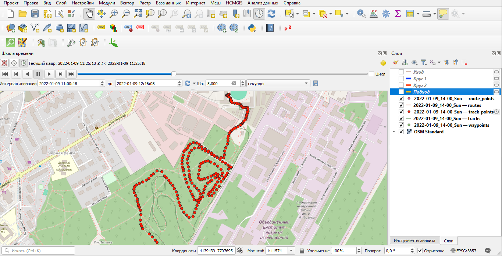
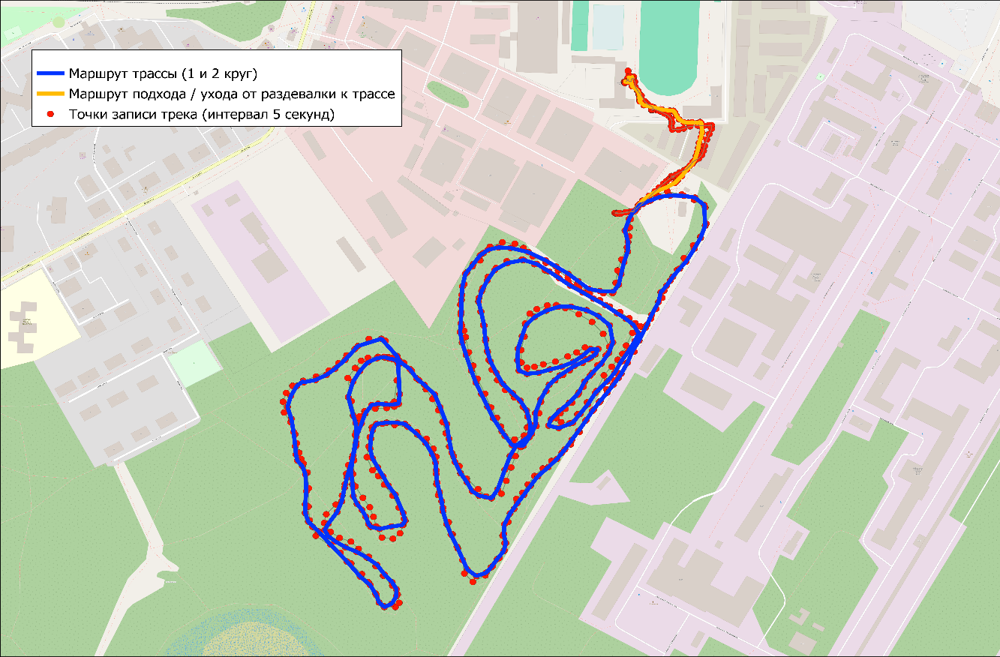

Порядок расчёта (проекция 3857)
1. Загрузка данных маршрута в виде векторных слоёв.
2. Установка для слоя «track points» динамического временного управления через поле «time», содержащее данные о точках маршрута, автоматически фиксируемых с интервалом в 5 секунд (единое поле даты/времени – накапливать объекты со временем). Запуск панели «Шкала времени» для слоя «track points», установка диапазона кадров 09.01.2022 11:00:18 – 09.01.2022 12:16:08). Шаг 5 секунд.

3. Определение участков маршрута и времени начала/завершения каждого из фрагментов.

4. Расчёт длины дистанции ухода/подхода от раздевалки к трассе, 1 и 2 круга через инструменты сетевого анализа – «Кратчайший путь (точка-точка).
Подход к трассе
Время начала – 11:00:18
Время завершения – 11:09:30
Длина трека – 322 метра
1 круг
Время начала - 11:09:30
Время завершения – 11:36:24
Длина трека – 4513 метров
Время прохождения – 26 минут 54 секунды
2 круг
Время начала - 11:36:24
Время завершения – 12:03:31
Длина трека – 4514 метров
Время прохождения – 27 минут 7 секунд
Уход с трассы
Время начала - 12:03:31
Время завершения – 12:12:28
Длина трека – 379 метров
Итоговая таблица по кругам
| Параметр | Круг 1 | Круг 2 | Среднее значение |
|---|---|---|---|
| Время начала | 11:09:30 | 11:36:24 | — |
| Время завершения | 11:36:24 | 12:03:31 | — |
| Длина трека (м) | 4513 | 4514 | 4513.5 |
| Время прохождения (сек) | 1614 | 1627 | 1620.5 |
| Время прохождения (мин:сек) | 26:54 | 27:07 | 27:00.5 |
| Скорость (км/ч) | 10.1 | 10.0 | 10.0 |
Максимальное удаление от базы – 760 метров.